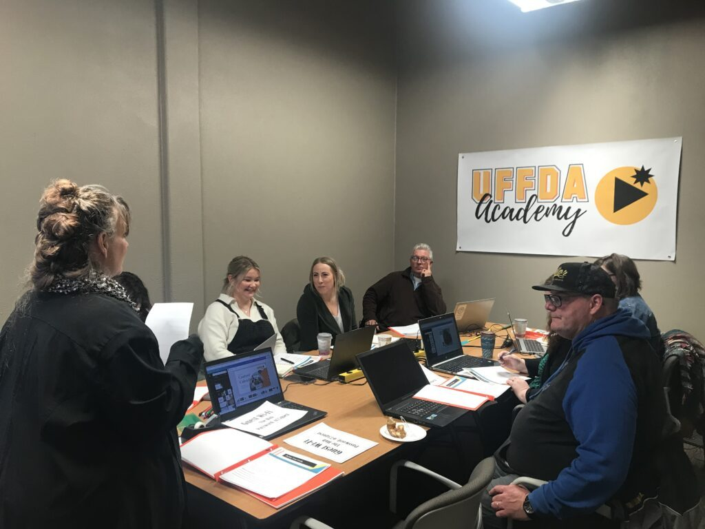

Starting a small business is like embarking on a thrilling adventure. You're the captain of your own ship, charting a course through uncharted waters. To ensure a smooth voyage, it's important to have a solid plan in place. Here are 10 Steps to Launching Your Small Business Successfully, sprinkled with a touch of humor and some real-world examples. When you approach something with an attitude of this will be fun instead of this is impossible, it makes it so much easier to achieve! So have fun, and we're here for you if you have any questions or we can be of assistance.
1. Idea Incubation: Hatch Your Great Idea!
Just like a baby bird breaking out of its shell, your business idea needs room to grow.
Whether it's a revolutionary product or a unique service, give it time to incubate. Taking the time to plan and prepare in the beginning saves hours, days or even weeks of time later fixing what you rushed through in the planning stage.
Take the example of the Airbnb founders, who turned an air mattress in their living room into a billion-dollar empire. Trust your idea(s)!
2. Market Research: Spy Like James Bond!
James Bond wouldn't enter a mission blindfolded, and neither should you. Conduct thorough market research to understand your target audience, competition, and industry trends. It's the secret sauce that sets you up for success.
3. Business Plan: It's Your Treasure Map!
A business plan is like your treasure map, guiding you through the ups and downs of entrepreneurship. Detail your mission, vision, target market, and financial projections. Need inspiration? Look at how Ben & Jerry's turned a passion for ice cream into a global phenomenon.
4. Legal Eagles: Get Your Ducks in a Row!
Registering your business (for most small businesses) is as simple as registering your business name with state and local governments.
Legalities may seem like a labyrinth, but they're crucial. Register your business, secure necessary licenses, and protect your intellectual property.
The SBA website can help you find out whether you need to register your business.
Where your business is located and what you do may impact how you need to register, so understanding what you do and how you do it is important.
Even if you don't need to register your business, be aware that if you don't, you could miss out on legal and/or tax benefits and personal liability protection.
5. Finances: Budget Like a Pro (Or Batman)!
Batman didn't build the Batmobile without a budget. Manage your finances wisely. Keep track of expenses, set a budget, and explore funding options. Even Batman wouldn't launch a business without financial vigilance. (Yep, my kids taught me to love all the superheroes 😉)
6. Build Your Brand: Make Your Mark!
Your brand is your cape; wear it proudly. Create a memorable logo, establish a unique voice, and craft a compelling story. Think about how Apple's sleek logo and "Think Different" mantra transformed the tech industry.
Be sure to contact Sue for your branding needs!
7. Set Up Shop: Virtual or Brick-and-Mortar?
Choosing between an online presence and a physical store is like deciding between teleportation and a scenic road trip.
By considering your product and target audience, you can make a choice that aligns with your business vision.
Take inspiration from the journey of Etsy, which began as an online haven for handmade goods.
8. Tech Tools: Become a Digital Superhero!
Embrace technology like your superpower! Utilize tools for accounting, marketing, and customer relationship management.
Just as Iron Man relies on his suit, you'll rely on tech to streamline operations.
Tammey specializes in helping creatives get over their fear of tech. Be sure to contact her if you need help in this area.

9. Spread the Word: Marketing Magic!
Launching a business is like hosting a party: you want people to know about it! Utilize social media, content marketing, and even old-fashioned flyers to spread the word. Take inspiration from Dollar Shave Club's viral video that catapulted them into the limelight! LinkedIn, Facebook, Instagram and other social media platforms are great ways to reach people.
10. Customer Care: Treat Them Like Royalty!
Your customers are your kingdom; treat them accordingly. Provide exceptional service, gather feedback, and build a loyal customer base.
We have many local businesses that are great examples of how to launch a successful small business. Look at Chezy, Thunder Coffee, Art & Soul, Massage Alchemy, and one of our favorite venues in Fargo, Cellar 624!
Launching a small business is an exhilarating journey, full of twists and turns. With these 10 steps and a sprinkle of humor, you'll be well prepared to navigate the entrepreneurial seas. Why the humor? Because starting a business takes a lot of time, effort, and YOU!
Just Getting Started?
If you haven't begun your journey yet, there are several simple things you can do before diving into business planning. Here are a few to consider:
- Identify your passion and skills: Start by reflecting on what you are truly passionate about and the skills you possess. Consider how you can align these with a potential business idea.
- Conduct market research: Understand the market you are entering. Analyze your target audience, competitors, and industry trends. This will help you identify opportunities and potential challenges. Research local businesses to see what's already there and what's missing!
- Define your unique value proposition: Determine what sets your business apart from competitors. Identify your unique selling points and how you can provide value to your customers.
- Build a strong network: Surround yourself with like-minded individuals, mentors, and professionals who can offer guidance and support. Attend networking events, join relevant communities, and connect with industry experts.
- Develop a business plan: Create a comprehensive business plan that outlines your goals, strategies, target market, financial projections, and marketing approaches. This will serve as a roadmap for your business.
- Financial preparation: Understand the financial aspects of starting a business. Evaluate your budget, determine startup costs, and explore funding options such as loans, grants, or crowdfunding.
- Reach out to successful business owners and ask them what their top ten steps would be and what advice they would have for someone starting out like you.
Remember, starting a business requires careful planning and dedication. By considering the points above, you can set a strong foundation for your superhero role!
Top 10 Resources for Small Business
I did a little research to get you started. Here are ten potential options to help you on your journey (in no particular order). Please feel free to reach out if you know of one that I should add.
- Small Business Development Center (SBDC): Provides guidance, training, and resources for small business owners.
- SCORE: Offers free mentoring and counseling services by experienced business professionals.
- The Chamber: Fargo, Moorhead & West Fargo Chamber of Commerce: Provides networking events, business resources, and advocacy.
- Emerging Prairie: Supports entrepreneurship and innovation through events, resources, and community building.
- StartupBREW Fargo: A morning meetup for entrepreneurs, innovators, creatives, and community members to come together and explore the entrepreneurial journey.
- North Dakota Women's Business Center: Focuses on empowering women entrepreneurs through training, counseling, and resources.
- Small Business Administration (SBA): Offers various programs, loans, and resources to support small businesses.
- Economic Development Corporation (EDC): Provides assistance, incentives, and resources for business expansion and relocation.
- Local universities and colleges: Many institutions offer entrepreneurship programs, business incubators, and resources for startups.
- Professional associations: Industry-specific associations can provide networking opportunities, resources, and support for small businesses.
This isn't an exhaustive list, so research each organization to see which ones align best with your specific needs and goals.
Remember, every business hero had to start somewhere. So put on your entrepreneur's cape and fly!
Want help with this?
Learn at your own pace with a short class, or get one-on-one help with your own project.
Need help creating your logo? DesignsThatDo.com is your answer!